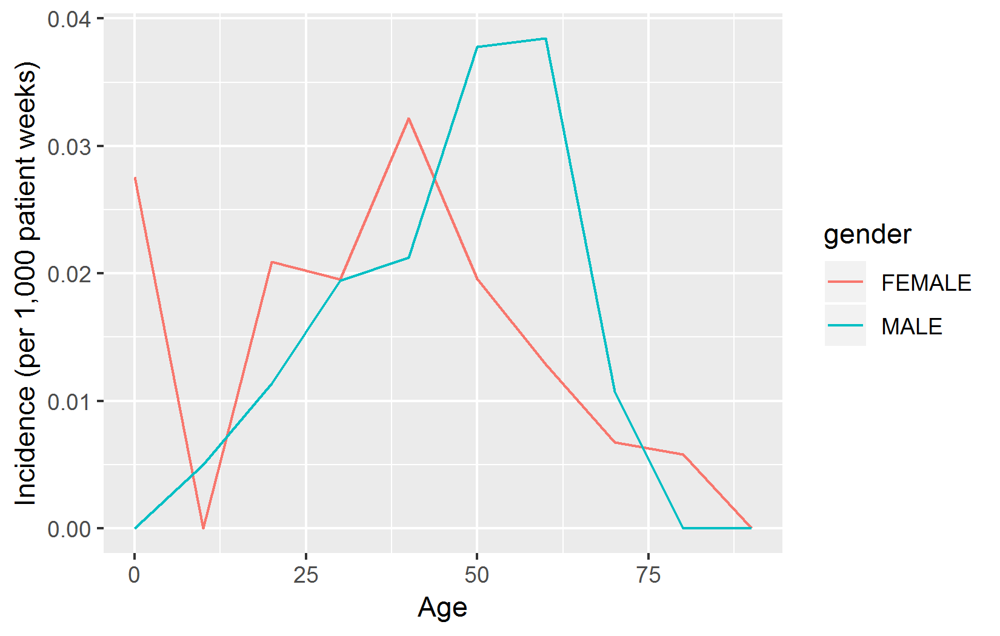

第 9 章 SQLとR
著者: Martijn Schuemie & Peter Rijnbeek
共通データモデル（CDM）はリレーショナルデータベースモデルです（すべてのデータはフィールドを持つテーブルのレコードとして表されます）。そのため、データは通常、PostgreSQL、Oracle、Microsoft SQL Serverなどのソフトウェアプラットフォームを使用してリレーショナルデータベースに保存されます。ATLASやMethods LibraryなどのさまざまなOHDSIツールは、バックグラウンドでデータベースにクエリを出すことで動作しますが、適切なアクセス権があれば、私たちも自身も直接データベースにクエリを出すことができます。その主な理由は、現在のツールではサポートされていない分析を行うためです。ただし、OHDSI ツールは多くの場合、ユーザーがデータを適切に分析できるよう、ガイドするように設計されているため、データベースを直接クエリすると、間違いを犯すリスクも高くなります。直接のクエリでは、そのようなガイドは提供されていません。
リレーショナルデータベースをクエリする標準的な言語はSQL（Structured Query Language）で、クエリやデータ変更に使用できます。 SQLの基本コマンドは確かに標準化されており、ソフトウェアプラットフォーム間で同じ意味を持ちますが、各プラットフォームには独自の「方言」があり、微妙な違いがあります。 例えば、SQL Server上のPERSONテーブルの最初の10行を取得するには、次のように入力します：
一方、PostgreSQLでは同じクエリは次のようになります：
OHDSIでは、プラットフォーム固有の表現に依存しないことを望んでいます。すなわち、すべてのOHDSIデータベースで同じSQL言語を使用したいと考えています。このため、OHDSIはSqlRenderパッケージを開発しました。これは、ある標準の表現から後述するサポート対象の表現に翻訳できるRパッケージです。この標準表現である - OHDSI SQL - は主にSQL Server SQL表現のサブセットです。本章で例示するSQL文はすべてOHDSI SQLを使用します。
各データベースプラットフォームには、SQLを使用したデータベースのクエリのための独自のソフトウェアツールも付属しています。OHDSIでは、多くのデータベースプラットフォームに接続できるRパッケージ、DatabaseConnectorパッケージを開発しました。DatabaseConnectorも本章の後半で説明します。
そのため、CDMに準拠したデータベースに対してOHDSIツールを使用せずにクエリを実行できますが、推奨されるパスはDatabaseConnectorとSqlRenderパッケージを使用することです。これにより、あるサイトで開発されたクエリが他のサイトでも修正することなく使用できるようになります。R自体も、データベースから抽出されたデータをさらに分析する機能を提供しており、統計分析の実行や（インタラクティブな）プロットの生成などが可能です。
本章では、読者がSQLの基本的な理解をしていることを前提としています。まず、SqlRenderとDatabaseConnectorの使用方法を確認します。これらのパッケージを使用しない場合は、このセクションをスキップいただいて構いません。セクション 9.3 では、CDMにクエリを出すためのSQL（この場合OHDSI SQL）を使用する方法を説明します。次のセクションでは、CDMにクエリする際にOHDSI標準化ボキャブラリを使用する方法を説明します。CDMに対する一般的に使用されるクエリのコレクションであり、一般に公開されているQueryLibraryに焦点を当てます。本章の最後では、発生率を推定する研究例を取り上げ、SqlRenderとDatabaseConnectorを使用してこの研究を実施します。
9.1 SqlRender
SqlRender パッケージは CRAN（Comprehensive R Archive Network）で入手可能であり、以下のコマンドでインストールできます：
SqlRenderは、従来のデータベースシステム（PostgreSQL、Microsoft SQL Server、SQLite、Oracle）や並列データウェアハウス（Microsoft APS、IBM Netezza、Amazon Redshift）に加え、ビッグデータプラットフォーム（Hadoop から Impala、Google BigQuery）など、幅広い技術プラットフォームをサポートしています。Rパッケージには、パッケージマニュアルと、全機能を紹介するビネットが付属しています。ここでは、主な機能の一部を紹介します。
9.1.1 SQLのパラメータ設定
パッケージの機能のひとつは、SQLのパラメータ化をサポートすることです。 しばしば、いくつかのパラメータに基づいて、SQLの小さなバリエーションを生成する必要があります。SqlRenderは、SQLコード内にシンプルなマークアップ構文を提供し、パラメータ化を可能にします。パラメータ値に基づくSQLのレンダリングは、render()関数を使用して行います。
パラメータ値の置換
@ 文字を使用して、レンダリング時に実際のパラメータ値と置換する必要があるパラメータ名を示します。以下の例では、SQL内で a という変数がSQLで言及されています。render 関数の呼び出しでは、このパラメータの値が定義されています：
## [1] "SELECT * FROM concept WHERE concept_id = 123;"ほとんどのデータベース管理システムが提供するパラメータ化とは異なり、テーブル名やフィールド名を値と同様に簡単にパラメータ化できることに注目ください：
## [1] "SELECT * FROM observation WHERE person_id = 123;"パラメータ値は、数値、文字列、ブーリアン変数、ベクトル（カンマ区切りのリストに変換される）とすることができます：
## [1] "SELECT * FROM concept WHERE concept_id IN (123,234,345);"If-Then-Else
時には、1つまたは複数のパラメータの値に基づいてコードブロックをオンまたはオフにする必要があります。これは、{Condition} ? {if true} : {if false} 構文を使用して行います。条件 が true または 1 の場合、if true ブロックが使用され、それ以外の場合は if false ブロックが（存在する場合）表示されます。
## [1] "SELECT * FROM cohort "## [1] "SELECT * FROM cohort WHERE subject_id = 1"簡単な比較もサポートされています：
## [1] "SELECT * FROM cohort WHERE subject_id = 1;"## [1] "SELECT * FROM cohort ;"IN 演算子もサポートされています：
## [1] "SELECT * FROM cohort WHERE subject_id = 1;"9.1.2 他のSQL表現への置換
SqlRender パッケージのもう一つの機能は、OHDSI SQLから他のSQL表現へ変換することです。例えば：
## [1] "SELECT * FROM person LIMIT 10;"
## attr(,"sqlDialect")
## [1] "postgresql"targetDialect パラメータには次の値が設定可能です：“oracle”, “postgresql”, “pdw”, “redshift”, “impala”, “netezza”, “bigquery”, “sqlite”, “sql server”。
最大限の努力を尽くしても、サポートされているすべてのプラットフォーム上でエラーなく実行されるOHDSI SQLを記載するには、考慮すべき点がいくつかあります。以下では、これらの考慮事項について詳しく説明します。
Translateがサポートする関数と構造
これらのSQL Server関数はテスト済であり、各表現への正確な変換が確認されています：
| 関数 | 関数 | 関数 |
|---|---|---|
| ABS | EXP | RAND |
| ACOS | FLOOR | RANK |
| ASIN | GETDATE | RIGHT |
| ATAN | HASHBYTES* | ROUND |
| AVG | ISNULL | ROW_NUMBER |
| CAST | ISNUMERIC | RTRIM |
| CEILING | LEFT | SIN |
| CHARINDEX | LEN | SQRT |
| CONCAT | LOG | SQUARE |
| COS | LOG10 | STDEV |
| COUNT | LOWER | SUM |
| COUNT_BIG | LTRIM | TAN |
| DATEADD | MAX | UPPER |
| DATEDIFF | MIN | VAR |
| DATEFROMPARTS | MONTH | YEAR |
| DATETIMEFROMPARTS | NEWID | |
| DAY | PI | |
| EOMONTH | POWER |
* Oracleでは特別な権限が必要です。SQLiteでは同等のものがありません。
同様に、多くのSQL構文構造がサポートされています。以下は、正確に翻訳されることが確認されている非網羅的なリストです：
-- Simple selects:
SELECT * FROM table;
-- Selects with joins:
SELECT * FROM table_1 INNER JOIN table_2 ON a = b;
-- Nested queries:
SELECT * FROM (SELECT * FROM table_1) tmp WHERE a = b;
-- Limiting to top rows:
SELECT TOP 10 * FROM table;
-- Selecting into a new table:
SELECT * INTO new_table FROM table;
-- Creating tables:
CREATE TABLE table (field INT);
-- Inserting verbatim values:
INSERT INTO other_table (field_1) VALUES (1);
-- Inserting from SELECT:
INSERT INTO other_table (field_1) SELECT value FROM table;
-- Simple drop commands:
DROP TABLE table;
-- Drop table if it exists:
IF OBJECT_ID('ACHILLES_analysis', 'U') IS NOT NULL
DROP TABLE ACHILLES_analysis;
-- Drop temp table if it exists:
IF OBJECT_ID('tempdb..#cohorts', 'U') IS NOT NULL
DROP TABLE #cohorts;
-- Common table expressions:
WITH cte AS (SELECT * FROM table) SELECT * FROM cte;
-- OVER clauses:
SELECT ROW_NUMBER() OVER (PARTITION BY a ORDER BY b)
AS "Row Number" FROM table;
-- CASE WHEN clauses:
SELECT CASE WHEN a=1 THEN a ELSE 0 END AS value FROM table;
-- UNIONs:
SELECT * FROM a UNION SELECT * FROM b;
-- INTERSECTIONs:
SELECT * FROM a INTERSECT SELECT * FROM b;
-- EXCEPT:
SELECT * FROM a EXCEPT SELECT * FROM b;文字列の連結
文字列の連結は、SQL Serverが他の言語よりも特異的ではない領域の1つです。SQL Serverでは、SELECT first_name + ' ' + last_name AS full_name FROM table と書きますが、これは PostgreSQL と Oracle では SELECT first_name || ' ' || last_name AS full_name FROM table でなければなりません。SqlRenderは、連結される値が文字列であるかどうかを推測しようとします。上記の例では、明示的な文字列（シングルクォーテーションで囲まれたスペース）があるため、変換は正しく行われます。しかし、クエリが SELECT first_name + last_name AS full_name FROM table であった場合、SqlRenderは2つのフィールドが文字列であることを知る手がかりがなく、プラス記号を正しく残さないでしょう。値が文字列であることのもう一つの手がかりは、明示的なVARCHARへのキャストです。 そのため、SELECT last_name + CAST(age AS VARCHAR(3)) AS full_name FROM table も正しく翻訳されます。曖昧さを避けるために、2つ以上の文字列を連結する場合は、CONCAT() 関数を使用するのが最善の方法です。
テーブルエイリアスとASキーワード
多くのSQL表現ではテーブルエイリアスを定義する際に AS キーワードを使用できますが、キーワードなしでも問題なく動作します。例えば、以下のSQL文はSQL Server、PostgreSQL、Redshiftなどでは問題なく動作します：
-- Using AS keyword
SELECT *
FROM my_table AS table_1
INNER JOIN (
SELECT * FROM other_table
) AS table_2
ON table_1.person_id = table_2.person_id;
-- Not using AS keyword
SELECT *
FROM my_table table_1
INNER JOIN (
SELECT * FROM other_table
) table_2
ON table_1.person_id = table_2.person_id;しかし、Oracleでは AS キーワードを使用するとエラーが発生します。上記の例では、最初のクエリは失敗します。そのため、テーブルにエイリアスを付ける際には AS キーワードを使用しないことを推奨します。（注：SqlRenderではOracleがAS の使用を許可していないテーブルエイリアスとOracleがASの使用を要求しているフィールドエイリアスを区別できないため、この問題に対応するのは難しいです。）
テンポラリテーブル（Temp Table）
テンポラリテーブルは中間結果を保存するのに非常に有用であり、正しく使用するとクエリのパフォーマンスを大幅に向上させることができます。ほとんどのデータベースプラットフォームでは、テンポラリテーブルには非常に優れた特性があります：現在のユーザーのみに参照でき、セッションが終了すると自動的に削除され、書き込みアクセス権がなくても作成できます。残念ながら、Oracleではテンポラリテーブルは基本的に恒久的なテーブルであり、唯一の違いはテーブル内のデータが現在のユーザーのみに参照されるという点です。このため、OracleではSqlRenderが以下の方法でテンポラリテーブルをエミュレートしようとします。
- 異なるユーザーからのテーブルが競合しないように、テーブル名にランダムな文字列を追加します。
- テンポラリテーブルが作成されるスキーマをユーザーが指定できるようにします。
例えば：
sql <- "SELECT * FROM #children;"
translate(sql, targetDialect = "oracle", oracleTempSchema = "temp_schema")## Warning: The 'oracleTempSchema' argument is deprecated. Use 'tempEmulationSchema' instead.
## This warning is displayed once every 8 hours.## [1] "SELECT * FROM temp_schema.eq85wzhcchildren ;"
## attr(,"sqlDialect")
## [1] "oracle"ユーザーは temp_schema に書き込み権限を持っている必要があります。
また、Oracleではテーブル名の長さが30文字に制限されているため、テンポラリテーブル名は最大22文字以内である必要があります。セッションIDを追加すると名前が長くなりすぎるためです。
さらに、Oracleではテンポラリテーブルは自動的に削除されないため、使用後に明示的にすべてのテンポラリテーブルを TRUNCATE および DROP して、孤立したテーブルがOracleの一時スキーマに蓄積しないようにする必要があります。
Implicit Cast（暗黙のデータ型変換）
SQL Serverが他の言語よりも特異である数少ない点の1つは、暗黙の型変換が許可されていることです。例えば、次のコードはSQL Serverで動作します：
txt がVARCHARフィールドで、それを整数と比較しているとしても、SQL Serverは比較を可能にするために、2つのうちの1つを自動的に正しい型に変換します。これに対して、PostgreSQLなどの他の方言では、VARCHARとINTを比較しようとするとエラーが発生します。 したがって、castは常に明示的に行う必要があります。上記の例では、最後のステートメントを以下のいずれかに置き換える必要があります：
または
文字列比較における大文字・小文字の区別
SQL Serverなどの一部のDBMSプラットフォームは常に大文字と小文字を区別せずに文字列比較を行いますが、PostgreSQLなどの他のプラットフォームは常に大文字と小文字を区別します。そのため、常に大文字・小文字を区別する比較を行うことを前提とし、大文字・小文字の区別が不明な場合は明示的に大文字・小文字の区別をしないようにすることを推奨します。例えば、次のように：
代わりに以下のように記述することが推奨されます：
スキーマとデータベース
SQL Serverでは、テーブルはスキーマ内にあり、スキーマはデータベース内にあります。例えば、cdm_data.dbo.person は cdm_data データベース内の dbo スキーマ内の person テーブルを指します。他の言語でも同様の階層が存在しますが、使用方法が大きく異なります。SQL Serverでは、データベースごとに通常1つのスキーマ（dbo と呼ばれることが多い）が存在し、ユーザーは異なるデータベース内のデータを簡単に使用できます。他のプラットフォーム、例えばPostgreSQLでは、単一セッションでデータベースをまたいだデータの使用はできませんが、データベース内に多くのスキーマが存在することがよくあります。PostgreSQLでは、SQL Serverのデータベースに相当するものがスキーマであると言えます。 そのため、SQL Serverのデータベースとスキーマを1つのパラメータに結合することを推奨します。通常、これを @databaseSchema と呼びます。例えば、パラメータ化されたSQLでは次のようになります：
SQL Serverでは、値にデータベース名とスキーマ名の両方を含めることができます：databaseSchema = "cdm_data.dbo"。他のプラットフォームでは、同じコードを使用し、パラメータ値としてスキーマのみを指定します：databaseSchema = "cdm_data"。
この方法が失敗する唯一の状況は USE コマンドを使用した場合です。なぜなら、USE cdm_data.dboを実行するとエラーが発生するからです。したがって、常にデータベース/スキーマを指定してテーブルの場所を示すようにし、USE コマンドの使用を避けることを推奨します。
パラメータ化されたSQLのデバッグ
パラメータ化されたSQLのデバッグは少し複雑になることがあります。レンダリングされたSQLのみがデータベースサーバーでテストできますが、コードの変更はパラメータ化された（レンダリング前の）SQLで行う必要があります。
ソースのSQLをインタラクティブに編集し、レンダリングおよび翻訳されたSQLを生成するためのShinyアプリが SqlRender パッケージに含まれています。このアプリは次の方法で起動できます：
これにより、図 9.1 に示すように、アプリがデフォルトのブラウザで開きます。アプリはウェブ上でも公開されています51。

図 9.1: The SqlDeveloper Shiny app.
このアプリでは、OHDSI SQLを入力し、ターゲットの方言を選択し、SQLに表示されるパラメータの値を入力すると、翻訳が自動的に下部に表示されます。
9.2 DatabaseConnector
DatabaseConnectorは、JavaのJDBCドライバを使用してさまざまなデータベースプラットフォームに接続するためのRパッケージです。DatabaseConnectorパッケージはCRAN（Comprehensive R Archive Network）で入手可能で、次のようにインストールできます：
DatabaseConnectorは、従来のデータベースシステム（PostgreSQL、Microsoft SQL Server、SQLite、およびOracle）、並列データウェアハウス（Microsoft APS、IBM Netezza、Amazon）、ならびにビッグデータプラットフォーム（Hadoopを介したImpala、およびGoogle BigQuery）など、広範な技術プラットフォームをサポートしています。このパッケージにはすでにほとんどのドライバが含まれていますが、ライセンス上の理由からBigQuery、Netezza、Impalaのドライバは含まれておらず、ユーザーが入手する必要があります。これらのドライバのダウンロード方法については、?jdbcDriversを参照ください。ダウンロード後、connect、dbConnect、createConnectionDetails関数のpathToDriver引数を使用できます。
9.2.1 接続の作成
データベースに接続するには、データベースプラットフォーム、サーバーの位置、ユーザー名、パスワードなど、多くの詳細を指定する必要があります。connect関数を呼び出し、これらの詳細を直接指定することができます：
conn <- connect(dbms = "postgresql",
server = "localhost/postgres",
user = "joe",
password = "secret",
schema = "cdm")## Connecting using PostgreSQL driver各プラットフォームに必要な詳細情報については、?connectを参照ください。接続を閉じたことを必ず確認ください：
サーバー名を指定する代わりに、JDBC接続文字列を提供することも可能です。さらに便利な場合は、こちらを使用することもできます：
connString <- "jdbc:postgresql://localhost:5432/postgres"
conn <- connect(dbms = "postgresql",
connectionString = connString,
user = "joe",
password = "secret",
schema = "cdm")## Connecting using PostgreSQL driver場合によっては、接続の詳細を先に指定し、接続を後にしたい場合もあるでしょう。例えば、接続が関数内で確立される場合、詳細を引数として渡す必要がある場合に有用です。この目的には、createConnectionDetails関数を使用できます：
details <- createConnectionDetails(dbms = "postgresql",
server = "localhost/postgres",
user = "joe",
password = "secret",
schema = "cdm")
conn <- connect(details)## Connecting using PostgreSQL driver9.2.2 クエリの実行
データベースにクエリを実行するための主な関数は、querySqlとexecuteSqlです。querySqlはデータがデータベースから返されることを想定しており、一度に1つのSQL文のみを処理できます。一方、executeSqlはデータが返されることを想定せず、複数のSQL文を1つのSQL文字列で受け入れます。
いくつかの例を挙げます：
## person_id gender_concept_id year_of_birth
## 1 1 8507 1975
## 2 2 8507 1976
## 3 3 8507 1977どちらの関数も広範なエラーレポートを提供します：サーバーによってエラーが発生した場合、エラーメッセージと問題のあるSQL文がテキストファイルに書き込まれ、デバッグが容易になります。また、executeSql関数はデフォルトで進行状況バーを表示し、実行されたSQL文の割合を示します。それらの属性が不要な場合は、lowLevelQuerySqlとlowLevelExecuteSql関数がパッケージに用意されています。
9.2.3 ffdfオブジェクトを使用したクエリの実行
データベースから取得するデータがメモリに収まりきらないほど大きい場合もあります。セクション 8.4.2 で述べたように、そのような場合にはffパッケージを使用してRデータオブジェクトをファイルに保存し、メモリ上にあるかのように使用することができます。DatabaseConnectorはデータを直接ffdfオブジェクトにダウンロードすることができます：
xは現在ffdfオブジェクトです。
9.2.4 同じSQLを用いて異なるプラットフォームにクエリを実行する
SqlRenderパッケージのrenderとtranslate関数を最初に呼び出す便利な関数があります：renderTranslateExecuteSql、renderTranslateQuerySql、renderTranslateQuerySql.ffdf。例えば：
x <- renderTranslateQuerySql(conn,
sql = "SELECT TOP 10 * FROM @schema.person",
schema = "cdm_synpuf")SQL Server固有の「TOP 10」構文は、PostgreSQLでは「LIMIT 10」などに変換され、SQLパラメーター@schemaは提供された値「cdm_synpuf」に置き換えられます。
9.3 CDMへのクエリ
以下の例では、OHDSI SQLを使用してCDMに準拠したデータベースにクエリを実行します。これらのクエリでは、CDMのデータベーススキーマを示すために@cdmを使用します。
まず、データベースに何人の人がいるかをクエリで取得してみましょう：
| PERSON_COUNT |
|---|
| 26299001 |
あるいは、観察期間の平均的な長さに興味があるのかもしれません：
SELECT AVG(DATEDIFF(DAY,
observation_period_start_date,
observation_period_end_date) / 365.25) AS num_years
FROM @cdm.observation_period;| NUM_YEARS |
|---|
| 1.980803 |
テーブルを結合して追加の統計を生成することができます。結合は通常、テーブル内の特定のフィールドに同じ値があることを要求することによって、複数のテーブルのフィールドを結合します。例えば、ここでは、両方のテーブルのPERSON_IDフィールドで、PERSONテーブルとOBSERVATION_PERIODテーブルを結合しています。つまり、結合の結果は、2つのテーブルのすべてのフィールドを持つ新しいテーブルのようなセットですが、すべての行において、2つのテーブルのPERSON_IDフィールドは同じ値でなければなりません。例えば、OBSERVATION_PERIODテーブルのOBSERVATION_PERIOD_END_DATEフィールドと、PERSONテーブルのyear_of_birthフィールドを組み合わせて使用することで、観察終了時の最大年齢を計算することができます：
SELECT MAX(YEAR(observation_period_end_date) -
year_of_birth) AS max_age
FROM @cdm.person
INNER JOIN @cdm.observation_period
ON person.person_id = observation_period.person_id;| MAX_AGE |
|---|
| 90 |
観察開始時の年齢分布を決定するには、はるかに複雑なクエリが必要です。このクエリでは、まずPERSONをOBSERVATION_PERIODテーブルに結合して観察開始時の年齢を計算します。また、この結合されたセットの順序を年齢に基づいて計算し、それをorder_nrとして保存します。この結合の結果を複数回使用したい場合には、共通テーブル式（common table expression; CTE）として定義し（WITH ... ASを使用）、「ages」と呼びます。これにより、agesを既存のテーブルであるかのように参照することができます。agesの行数を数えて「n」を生成し、各分位数に対して、order_nrが分数のn倍より小さい最小年齢を求めます。例えば、中央値を求めるには$order_nr < .50 * nの最小年齢を使用します。最小年齢と最大年齢は別々に計算されます：
WITH ages
AS (
SELECT age,
ROW_NUMBER() OVER (
ORDER BY age
) order_nr
FROM (
SELECT YEAR(observation_period_start_date) - year_of_birth AS age
FROM @cdm.person
INNER JOIN @cdm.observation_period
ON person.person_id = observation_period.person_id
) age_computed
)
SELECT MIN(age) AS min_age,
MIN(CASE
WHEN order_nr < .25 * n
THEN 9999
ELSE age
END) AS q25_age,
MIN(CASE
WHEN order_nr < .50 * n
THEN 9999
ELSE age
END) AS median_age,
MIN(CASE
WHEN order_nr < .75 * n
THEN 9999
ELSE age
END) AS q75_age,
MAX(age) AS max_age
FROM ages
CROSS JOIN (
SELECT COUNT(*) AS n
FROM ages
) population_size;| MIN_AGE | Q25_AGE | MEDIAN_AGE | Q75_AGE | MAX_AGE |
|---|---|---|---|---|
| 0 | 6 | 17 | 34 | 90 |
より複雑な計算は、SQLの代わりにRを使用して行うこともできます。例えば、同じ結果を得るため、次のRコードを使用することができます：
sql <- "SELECT YEAR(observation_period_start_date) -
year_of_birth AS age
FROM @cdm.person
INNER JOIN @cdm.observation_period
ON person.person_id = observation_period.person_id;"
age <- renderTranslateQuerySql(conn, sql, cdm = "cdm")
quantile(age[, 1], c(0, 0.25, 0.5, 0.75, 1))## 0% 25% 50% 75% 100%
## 0 6 17 34 90ここでは、サーバー上で年齢を計算し、すべての年齢をダウンロードし、年齢分布を計算します。しかし、これにはデータベースサーバーから数百万行ものデータをダウンロードする必要があり、効率的ではありません。計算をSQLで行うかRで行うかは、ケースバイケースで判断する必要があります。
クエリでは、CDM内のソース値を使用することができます。例えば、最も頻度の高いコンディションのソースコードのトップ10を取得するには、以下を用います：
SELECT TOP 10 condition_source_value,
COUNT(*) AS code_count
FROM @cdm.condition_occurrence
GROUP BY condition_source_value
ORDER BY -COUNT(*);| CONDITION_SOURCE_VALUE | CODE_COUNT |
|---|---|
| 4019 | 49094668 |
| 25000 | 36149139 |
| 78099 | 28908399 |
| 319 | 25798284 |
| 31401 | 22547122 |
| 317 | 22453999 |
| 311 | 19626574 |
| 496 | 19570098 |
| I10 | 19453451 |
| 3180 | 18973883 |
ここでは、CONDITION_OCCURRENCEテーブル内のCONDITION_SOURCE_VALUEフィールドの値でレコードをグループ化し、各グループのレコード数をカウントしました。CONDITION_SOURCE_VALUEとそのカウントを取得し、カウントで逆順で並べ替えています。
9.4 クエリ実行時にボキャブラリを使用する
多くの操作では、ボキャブラリが有用です。ボキャブラリテーブルはCDMの一部であり、SQLクエリを使用して利用できます。ここでは、ボキャブラリに対するクエリをCDMに対するクエリと組み合わせる方法を示します。CDMの多くのフィールドにはコンセプトIDが含まれていますが、これらはCONCEPTテーブルを使用して解決できます。例えば、データベース内の人数を性別で階層化してカウントしたい場合、GENDER_CONCEPT_IDフィールドをコンセプト名に解決すると便利です：
SELECT COUNT(*) AS subject_count,
concept_name
FROM @cdm.person
INNER JOIN @cdm.concept
ON person.gender_concept_id = concept.concept_id
GROUP BY concept_name;| SUBJECT_COUNT | CONCEPT_NAME |
|---|---|
| 14927548 | FEMALE |
| 11371453 | MALE |
ボキャブラリの非常に強力な機能の一つは、その階層構造です。よくあるクエリは、特定のコンセプトと そのすべての下位層を探すものです。例えば、イププロフェンという成分を含む処方件数を数えるとします：
SELECT COUNT(*) AS prescription_count
FROM @cdm.drug_exposure
INNER JOIN @cdm.concept_ancestor
ON drug_concept_id = descendant_concept_id
INNER JOIN @cdm.concept ingredient
ON ancestor_concept_id = ingredient.concept_id
WHERE LOWER(ingredient.concept_name) = 'ibuprofen'
AND ingredient.concept_class_id = 'Ingredient'
AND ingredient.standard_concept = 'S';| PRESCRIPTION_COUNT |
|---|
| 26871214 |
9.5 QueryLibrary
QueryLibraryは、CDM用の一般に使用されるSQLクエリのライブラリです。これはオンラインアプリケーション52として提供されており、図 9.2 に示すように、Rパッケージとしても利用できます53。

図 9.2: クエリライブラリ：CDMに対するSQLクエリのライブラリ
このライブラリの目的は、新しいユーザーがCDMのクエリ方法を学習するのを支援することです。ライブラリ内のクエリは、OHDSIコミュニティによって審査され、承認されています。クエリライブラリは主にトレーニング目的で使用されますが、経験豊富なユーザーにとっても貴重なリソースとなります。
QueryLibraryは、SqlRenderを利用して、選択したSQL方言でクエリを実行します。ユーザーはCDMのデータベーススキーマ、ボキャブラリデータベーススキーマ（別々のものがある場合）、Oracleテンポラリスキーマ（必要な場合）を指定することもでき、これらの設定でクエリが自動的にレンダリングされます。
9.6 単純な研究デザイン
9.6.1 問題の定義
血管性浮腫は、ACE阻害薬のよく知られた副作用です。Slater et al. (1988) によると、ACE阻害薬治療開始後1週間の血管性浮腫の発症率は3,000人中1例/週と推定されています。ここでは、この結果を再現し、年齢と性別によって層別化します。単純化するため、ACE阻害薬の一つである（リシノプリル）に焦点を当てます。したがって、次の問いに答えます：
リシノプリル投与開始後の最初の1週間での血管性浮腫の発生率は、年齢と性別で層別化するとどの程度でしょうか？
9.7 SQLとRを使用した研究の実施
OHDSIツールの慣例に縛られることはありませんが、同じ原則に従うことは有益です。この場合、OHDSIツールが動作するのと同様に、SQLを用いてコホートテーブルを作成します。COHORTテーブルはCDMに定義されており、使用する事前定義されたフィールドセットもあります。まず、書き込み権限のあるデータベーススキーマにCOHORTテーブルを作成する必要がありますが、これはCDM形式でデータを保持しているスキーマとは異なるスキーマである可能性が高いです。
library(DatabaseConnector)
conn <- connect(dbms = "postgresql",
server = "localhost/postgres",
user = "joe",
password = "secret")
cdmDbSchema <- "cdm"
cohortDbSchema <- "scratch"
cohortTable <- "my_cohorts"
sql <- "
CREATE TABLE @cohort_db_schema.@cohort_table (
cohort_definition_id INT,
cohort_start_date DATE,
cohort_end_date DATE,
subject_id BIGINT
);
"
renderTranslateExecuteSql(conn, sql,
cohort_db_schema = cohortDbSchema,
cohort_table = cohortTable)ここでは、データベーススキーマとテーブル名をパラメータ化しています。異なる環境に簡単に適応させることができます。その結果、データベースサーバー上に空のテーブルが作成されます。
9.7.1 曝露コホート
次に、曝露コホートを作成し、COHORTテーブルに挿入します：
sql <- "
INSERT INTO @cohort_db_schema.@cohort_table (
cohort_definition_id,
cohort_start_date,
cohort_end_date,
subject_id
)
SELECT 1 AS cohort_definition_id,
cohort_start_date,
cohort_end_date,
subject_id
FROM (
SELECT drug_era_start_date AS cohort_start_date,
drug_era_end_date AS cohort_end_date,
person_id AS subject_id
FROM (
SELECT drug_era_start_date,
drug_era_end_date,
person_id,
ROW_NUMBER() OVER (
PARTITION BY person_id
ORDER BY drug_era_start_date
) order_nr
FROM @cdm_db_schema.drug_era
WHERE drug_concept_id = 1308216 -- リシノプリル
) ordered_exposures
WHERE order_nr = 1
) first_era
INNER JOIN @cdm_db_schema.observation_period
ON subject_id = person_id
AND observation_period_start_date < cohort_start_date
AND observation_period_end_date > cohort_start_date
WHERE DATEDIFF(DAY,
observation_period_start_date,
cohort_start_date) >= 365;
"
renderTranslateExecuteSql(conn, sql,
cohort_db_schema = cohortDbSchema,
cohort_table = cohortTable,
cdm_db_schema = cdmDbSchema)ここでは、CDMの標準テーブルであるDRUG_ERAテーブルを使用します。このテーブルはDRUG_EXPOSUREテーブルから自動的に派生するものです。DRUG_ERAテーブルには成分レベルでの継続的な曝露期間が含まれるため、リシノプリルを検索すると、自動的にリシノプリルを含む薬剤への曝露がすべて特定されます。次に、OBSERVATION_PERIOD テーブルに結合し、1人当たりの最初の薬物曝露を取り出します。1人の患者が複数の観察期間を持つ可能性があるため、薬物曝露を含む期間のみに結合する必要があります。また、OBSERVATION_PERIOD_START_DATE と COHORT_START_DATE の間には、少なくとも 365 日の間隔が必要となります。
9.7.2 アウトカムコホート
最後に、アウトカムコホートを作成する必要があります：
sql <- "
INSERT INTO @cohort_db_schema.@cohort_table (
cohort_definition_id,
cohort_start_date,
cohort_end_date,
subject_id
)
SELECT 2 AS cohort_definition_id,
cohort_start_date,
cohort_end_date,
subject_id
FROM (
SELECT DISTINCT person_id AS subject_id,
condition_start_date AS cohort_start_date,
condition_end_date AS cohort_end_date
FROM @cdm_db_schema.condition_occurrence
INNER JOIN @cdm_db_schema.concept_ancestor
ON condition_concept_id = descendant_concept_id
WHERE ancestor_concept_id = 432791 -- 血管性浮腫
) distinct_occurrence
INNER JOIN @cdm_db_schema.visit_occurrence
ON subject_id = person_id
AND visit_start_date <= cohort_start_date
AND visit_end_date >= cohort_start_date
WHERE visit_concept_id IN (262, 9203,
9201) -- 入院または救急室;
"
renderTranslateExecuteSql(conn, sql,
cohort_db_schema = cohortDbSchema,
cohort_table = cohortTable,
cdm_db_schema = cdmDbSchema)ここでは、CONDITION_OCCURRENCEテーブルをCONCEPT_ANCESTORテーブルと結合して、血管性浮腫またはその下位層に含まれるすべての出現を見つけます。同じ日に複数の診断がある場合、それは同じ発生である可能性が高いため、各日1件のレコードのみを取得するようにDISTINCTを使用します。次に、診断が入院または救急室で行われたことを確認するために、これらの発生をVISIT_OCCURRENCEテーブルと結合します。
9.7.3 発生率の計算
コホートが設定されたので、年齢と性別で層別化された発生率を計算できます：
sql <- "
WITH tar AS (
SELECT concept_name AS gender,
FLOOR((YEAR(cohort_start_date) -
year_of_birth) / 10) AS age,
subject_id,
cohort_start_date,
CASE WHEN DATEADD(DAY, 7, cohort_start_date) >
observation_period_end_date
THEN observation_period_end_date
ELSE DATEADD(DAY, 7, cohort_start_date)
END AS cohort_end_date
FROM @cohort_db_schema.@cohort_table
INNER JOIN @cdm_db_schema.observation_period
ON subject_id = observation_period.person_id
AND observation_period_start_date < cohort_start_date
AND observation_period_end_date > cohort_start_date
INNER JOIN @cdm_db_schema.person
ON subject_id = person.person_id
INNER JOIN @cdm_db_schema.concept
ON gender_concept_id = concept_id
WHERE cohort_definition_id = 1 -- 曝露
)
SELECT days.gender,
days.age,
days,
CASE WHEN events IS NULL THEN 0 ELSE events END AS events
FROM (
SELECT gender,
age,
SUM(DATEDIFF(DAY, cohort_start_date,
cohort_end_date)) AS days
FROM tar
GROUP BY gender,
age
) days
LEFT JOIN (
SELECT gender,
age,
COUNT(*) AS events
FROM tar
INNER JOIN @cohort_db_schema.@cohort_table angioedema
ON tar.subject_id = angioedema.subject_id
AND tar.cohort_start_date <= angioedema.cohort_start_date
AND tar.cohort_end_date >= angioedema.cohort_start_date
WHERE cohort_definition_id = 2 -- アウトカム
GROUP BY gender,
age
) events
ON days.gender = events.gender
AND days.age = events.age;
"
results <- renderTranslateQuerySql(conn, sql,
cohort_db_schema = cohortDbSchema,
cohort_table = cohortTable,
cdm_db_schema = cdmDbSchema,
snakeCaseToCamelCase = TRUE)まず、CTE「tar」を作成し、適切なリスク時間を伴うすべての曝露を含めます。OBSERVATION_PERIOD_END_DATEでリスク時間が切り捨てられることに留意ください。また、10年ごとの年齢階層を計算し、性別を特定します。CTEを使用する利点は、クエリ中に同じ中間結果セットを複数回使用できることです。このユースケースでは、リスク時間の合計およびリスク時間中に発生する血管性浮腫のイベント数を数えるために使用します。
snakeCaseToCamelCase = TRUE を用いるのは、SQLではフィールド名にsnake_case を使用する傾向がある（SQLは大文字と小文字を区別しないため）のに対し、RではcamelCaseを使用する傾向がある（Rは大文字・小文字を区別するため）からです。resultsデータフレームの列名はcamelCaseになります。
ggplot2パッケージを使用すると、結果を簡単にプロットできます：
# 発生率（IR）を算出
results$ir <- 1000 * results$events / results$days / 7
# 年齢スケールを修正
results$age <- results$age * 10
library(ggplot2)
ggplot(results, aes(x = age, y = ir, group = gender, color = gender)) +
geom_line() +
xlab("年齢") +
ylab("発生率（1,000患者/週）")
9.8 まとめ
SQL（Structured Query Language）は、共通データモデル（CDM）に準拠したデータベースを含む、データベースに照会するための標準言語です。
異なるデータベースプラットフォームは異なるSQL表現を持っており、照会するためには異なるツールが必要です。
SqlRenderとDatabaseConnector Rパッケージは、CDM内のデータを照会するための統一された方法を提供し、同じ分析コードを修正することなく異なる環境で実行できるようにします。
RとSQLを併用することで、OHDSIツールではサポートされていないカスタム分析を実装できます。
QueryLibraryは、CDM用の再利用可能なSQLクエリのコレクションを提供します。
9.9 演習
前提条件
これらの演習では、セクション 8.4.5 に記載されているように、R、R-Studio、Java がインストールされていることを前提とします。また、SqlRender、DatabaseConnector、および Eunomia パッケージも必要です。以下の手順でインストールできます。
install.packages(c("SqlRender", "DatabaseConnector", "remotes"))
remotes::install_github("ohdsi/Eunomia", ref = "v1.0.0")Eunomia パッケージは、CDM 内でローカル R セッション内で動作する模擬データセットを提供します。接続の詳細は以下の方法で取得できます。
CDM データベースのスキーマは「main」です。
演習 9.1 SQL と R を使用して、データベース内に何人いるかを計算します。
演習 9.2 SQL と R を使用して、セレコキシブの処方を少なくとも１回受けたことがある人の人数を計算します。
演習 9.3 SQL と R を使用して、セレコキシブの服用中に消化管出血と診断された人の人数を計算します。(ヒント: 消化管出血のコンセプト ID は 192671 です)
解答例は付録 E.5 を参照ください。